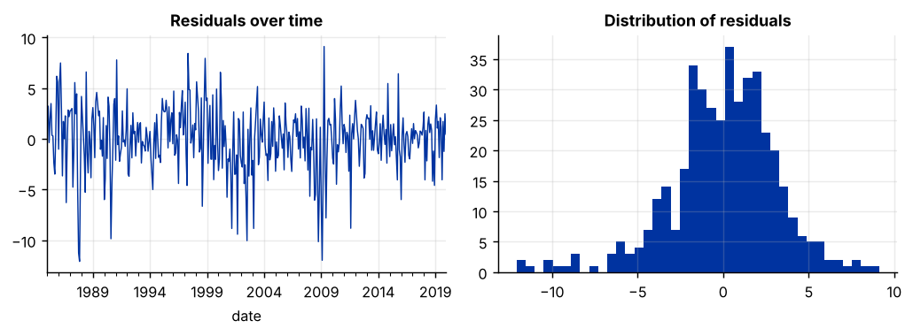
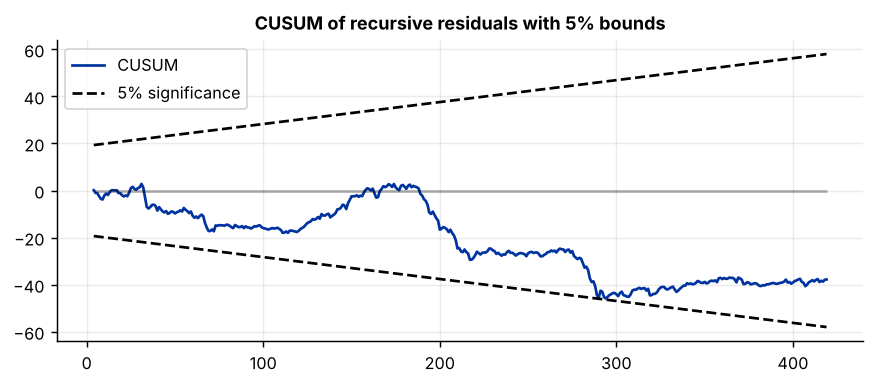

Step 1The question and the model
Every empirical paper starts from a question that a regression can answer. Ours is: do macroeconomic conditions explain monthly U.S. stock returns?
The model selection tool showed that all four variables are stationary in levels, so the model can be estimated by ordinary least squares in levels:
| Symbol | Variable in the file | Definition | Expected sign |
|---|---|---|---|
| \(r_t\) | sp500_return |
Monthly log return on the S&P 500, in percent | dependent variable |
| \(\Delta ip_t\) | ip_growth |
Monthly growth of industrial production, in percent | positive: stronger activity raises expected cash flows |
| \(\Delta ffr_t\) | d_fedfunds |
Change in the federal funds rate, percentage points | negative: a higher discount rate lowers prices |
| \(\Delta cs_t\) | d_credit_spread |
Change in the Baa–10-year Treasury spread, percentage points | negative: wider spreads signal higher risk |
Before you estimate anything
Write down the equation, define every variable with its unit, and state the sign you expect and why. Referees look for this table. It also protects you from explaining a result only after you have seen it.
How to write it: model section
To examine whether macroeconomic conditions explain stock returns, we estimate \(r_t = \beta_0 + \beta_1 \Delta ip_t + \beta_2 \Delta ffr_t + \beta_3 \Delta cs_t + \varepsilon_t\), where \(r_t\) is the monthly log return on the S&P 500, \(\Delta ip_t\) is the growth rate of industrial production, \(\Delta ffr_t\) is the change in the federal funds rate and \(\Delta cs_t\) is the change in the Baa–Treasury credit spread. We expect \(\beta_1 > 0\), since stronger real activity raises expected cash flows, and \(\beta_2 < 0\) and \(\beta_3 < 0\), since higher discount rates and higher credit risk lower equity valuations.
Step 2Load the data and confirm the starting point
import pandas as pd
import numpy as np
import statsmodels.api as sm
import statsmodels.formula.api as smf
df = pd.read_csv("returns.csv", parse_dates=["date"]).set_index("date")
print(df.shape)
print(df.describe().T[["mean", "std", "min", "max"]].round(3))(420, 4)
mean std min max
sp500_return 0.705 3.537 -22.804 11.352
ip_growth 0.149 0.608 -4.485 2.039
d_fedfunds -0.016 0.192 -0.960 0.870
d_credit_spread 0.000 0.169 -0.990 1.450from statsmodels.tsa.stattools import adfuller
for col in df:
stat, p = adfuller(df[col], autolag="AIC")[:2]
print(f"{col:16s} ADF = {stat:6.2f} p-value = {p:.3f}")sp500_return ADF = -15.73 p-value = 0.000 ip_growth ADF = -5.42 p-value = 0.000 d_fedfunds ADF = -4.19 p-value = 0.001 d_credit_spread ADF = -5.20 p-value = 0.000
How to read it
There are 420 monthly observations. The ADF p-values are all below 0.05, so a unit root is rejected for every variable: all four are I(0). This is the condition for using OLS in levels. If even one variable were I(1), you would be in a different guide.
Note the minimum return of −22.8%. That is October 2008. One extreme month can drive a regression, so we will check later whether the results survive without the crisis.
Step 3Estimate the baseline regression
model = smf.ols("sp500_return ~ ip_growth + d_fedfunds + d_credit_spread", data=df).fit()
print(model.summary().tables[1])
print(f"R-squared = {model.rsquared:.3f} Adj. R-squared = {model.rsquared_adj:.3f}")
print(f"F-statistic = {model.fvalue:.2f} p-value = {model.f_pvalue:.2e} N = {int(model.nobs)}")===================================================================================
coef std err t P>|t| [0.025 0.975]
-----------------------------------------------------------------------------------
Intercept 0.7150 0.160 4.456 0.000 0.400 1.030
ip_growth -0.1675 0.260 -0.644 0.520 -0.678 0.343
d_fedfunds -1.0838 0.851 -1.273 0.204 -2.757 0.589
d_credit_spread -9.7470 0.951 -10.249 0.000 -11.616 -7.878
===================================================================================
R-squared = 0.205 Adj. R-squared = 0.199
F-statistic = 35.71 p-value = 1.49e-20 N = 420How to read it
- Coefficient. A one-percentage-point rise in the credit spread within a month is associated with a return that is 9.7 percentage points lower. A typical monthly change in the spread is 0.17 points (its standard deviation), which corresponds to about −1.7 points of return.
- t-statistic and p-value. Only the credit spread is significant. Industrial production growth and the change in the federal funds rate have p-values of 0.52 and 0.20, so we cannot say their effects differ from zero.
- R-squared. The three variables explain about 20% of the variation in monthly returns. For stock returns this is high; most of it comes from the credit spread.
- F-statistic. The regressors are jointly significant.
Do not report these standard errors yet. They are valid only if the residuals pass the diagnostic tests in the next steps.
Step 4Diagnostic test 1: serial correlation
OLS standard errors assume that the errors are not correlated over time. The Breusch–Godfrey test has the null hypothesis of no serial correlation.
from statsmodels.stats.diagnostic import acorr_breusch_godfrey
from statsmodels.stats.stattools import durbin_watson
print(f"Durbin-Watson = {durbin_watson(model.resid):.2f}")
for lags in (1, 6, 12):
lm, p = acorr_breusch_godfrey(model, nlags=lags)[:2]
print(f"Breusch-Godfrey, {lags:2d} lags: LM = {lm:6.2f} p-value = {p:.4f}")Durbin-Watson = 1.61 Breusch-Godfrey, 1 lags: LM = 16.43 p-value = 0.0001 Breusch-Godfrey, 6 lags: LM = 23.27 p-value = 0.0007 Breusch-Godfrey, 12 lags: LM = 32.58 p-value = 0.0011
How to read it
A Durbin–Watson statistic near 2 means no first-order autocorrelation; 1.61 points to positive autocorrelation. The Breusch–Godfrey p-values are far below 0.05 at every lag length, so the null of no serial correlation is rejected.
There is a specific reason here. The S&P 500 series is a monthly average of daily prices, and averaging creates first-order autocorrelation in returns even when daily returns have none. Knowing your data's construction often explains a failed test.
The coefficients are still unbiased, but the standard errors are wrong. The fix comes in the step on robust standard errors.
Step 5Diagnostic test 2: heteroskedasticity
OLS standard errors also assume a constant error variance. The White and Breusch–Pagan tests have the null of homoskedasticity; the ARCH test checks whether volatility clusters over time.
from statsmodels.stats.diagnostic import het_white, het_breuschpagan, het_arch
exog = model.model.exog
print(f"White: LM = {het_white(model.resid, exog)[0]:6.2f} p-value = {het_white(model.resid, exog)[1]:.4f}")
print(f"Breusch-Pagan: LM = {het_breuschpagan(model.resid, exog)[0]:6.2f} p-value = {het_breuschpagan(model.resid, exog)[1]:.4f}")
print(f"ARCH (6 lags): LM = {het_arch(model.resid, nlags=6)[0]:6.2f} p-value = {het_arch(model.resid, nlags=6)[1]:.4f}")White: LM = 64.77 p-value = 0.0000 Breusch-Pagan: LM = 19.65 p-value = 0.0002 ARCH (6 lags): LM = 29.77 p-value = 0.0000
How to read it
All three tests reject at the 1% level. The error variance is not constant, and it clusters in time, which is the usual finding for financial returns: calm periods and turbulent periods alternate. As with serial correlation, the coefficients are unaffected but the conventional standard errors cannot be trusted.
Step 6Diagnostic test 3: normality of the residuals
from statsmodels.stats.stattools import jarque_bera
jb, p, skew, kurt = jarque_bera(model.resid)
print(f"Jarque-Bera = {jb:.2f} p-value = {p:.4f} skewness = {skew:.2f} kurtosis = {kurt:.2f}")
import matplotlib.pyplot as plt
fig, ax = plt.subplots(1, 2, figsize=(8, 3))
model.resid.plot(ax=ax[0], lw=.8, title="Residuals over time")
ax[1].hist(model.resid, bins=40); ax[1].set_title("Distribution of residuals")
plt.tight_layout()Jarque-Bera = 72.35 p-value = 0.0000 skewness = -0.62 kurtosis = 4.62

How to read it
The Jarque–Bera test rejects normality: the residuals are skewed to the left (−0.62) and have fat tails (kurtosis 4.6 against 3 for a normal distribution). The plots show why: a few very large negative months, above all in 1987 and 2008.
With 420 observations this is not a serious problem. The t- and F-tests are still valid in large samples by the central limit theorem. State this in the paper rather than hiding the test. Normality matters much more in small samples.
Step 7Diagnostic test 4: functional form, multicollinearity and stability
from statsmodels.stats.diagnostic import linear_reset, breaks_cusumolsresid
from statsmodels.stats.outliers_influence import variance_inflation_factor
reset = linear_reset(model, power=2, use_f=True)
print(f"Ramsey RESET: F = {reset.fvalue:.2f} p-value = {reset.pvalue:.4f}")
names = model.model.exog_names
for i in range(1, len(names)):
print(f"VIF {names[i]:16s} = {variance_inflation_factor(model.model.exog, i):.2f}")
stat, p = breaks_cusumolsresid(model.resid, ddof=len(names))[:2]
print(f"CUSUM test of parameter stability: statistic = {stat:.2f} p-value = {p:.4f}")Ramsey RESET: F = 28.66 p-value = 0.0000 VIF ip_growth = 1.04 VIF d_fedfunds = 1.12 VIF d_credit_spread = 1.08 CUSUM test of parameter stability: statistic = 1.51 p-value = 0.0205
rec = sm.RecursiveLS(model.model.endog, model.model.exog).fit()
fig = plt.figure(figsize=(8, 3))
rec.plot_cusum(fig=fig)
fig.axes[0].set_title("CUSUM of recursive residuals with 5% bounds")
How to read it
- RESET has the null that the linear functional form is correct. It is rejected (p < 0.001), so something nonlinear is missing from the model. This one affects the coefficients themselves, not just the standard errors, so it must be dealt with.
- VIF values are all close to 1. Values above 10 would signal harmful multicollinearity; here there is none.
- CUSUM tests whether the coefficients are stable over the sample. The test statistic rejects stability at 5% (p = 0.02), and in the plot the CUSUM line drifts down and touches its lower bound near observation 290, which is early 2009. Both point to a change in the relationship around the financial crisis, so a subsample check is needed later.
How to write it: diagnostics paragraph
Diagnostic tests on the baseline specification indicate serial correlation (Breusch–Godfrey LM(6) = 23.27, p < 0.01) and heteroskedasticity (White LM = 64.77, p < 0.01) in the residuals. Inference is therefore based on Newey–West heteroskedasticity- and autocorrelation-consistent standard errors throughout. The Jarque–Bera test rejects normality, reflecting a small number of extreme negative returns; given the sample of 420 observations, inference relies on asymptotic results. Variance inflation factors below 1.2 rule out multicollinearity. The RESET test rejects the linear specification (F = 28.66, p < 0.01), which motivates the nonlinear specification considered below.
Step 8Fix what failed: robust standard errors and a better specification
Two different problems need two different fixes.
Serial correlation and heteroskedasticity leave the coefficients unchanged but make the standard errors wrong. The standard remedy is Newey–West (HAC) standard errors. A common rule for the lag length is \(4(T/100)^{2/9}\), which gives 5 for 420 observations.
lags = int(4 * (len(df) / 100) ** (2 / 9))
hac = model.get_robustcov_results(cov_type="HAC", maxlags=lags)
print(f"Newey-West lags: {lags}")
print(hac.summary().tables[1])Newey-West lags: 5
===================================================================================
coef std err t P>|t| [0.025 0.975]
-----------------------------------------------------------------------------------
Intercept 0.7150 0.180 3.974 0.000 0.361 1.069
ip_growth -0.1675 0.299 -0.561 0.575 -0.755 0.420
d_fedfunds -1.0838 0.942 -1.150 0.251 -2.936 0.768
d_credit_spread -9.7470 1.792 -5.438 0.000 -13.270 -6.224
===================================================================================A rejected RESET test means the model itself should change. A natural candidate is that large moves in the credit spread matter more than proportionally, so we add the squared change.
model2 = smf.ols("sp500_return ~ ip_growth + d_fedfunds + d_credit_spread + I(d_credit_spread**2)", data=df).fit()
hac2 = model2.get_robustcov_results(cov_type="HAC", maxlags=lags)
print(hac2.summary().tables[1])
print(f"R-squared = {model2.rsquared:.3f}")
print(f"RESET p-value = {linear_reset(model2, power=2, use_f=True).pvalue:.3f}")===========================================================================================
coef std err t P>|t| [0.025 0.975]
-------------------------------------------------------------------------------------------
Intercept 0.9036 0.179 5.044 0.000 0.551 1.256
ip_growth -0.1470 0.318 -0.462 0.644 -0.773 0.479
d_fedfunds -2.0100 0.910 -2.208 0.028 -3.799 -0.221
d_credit_spread -8.7109 1.199 -7.267 0.000 -11.067 -6.355
I(d_credit_spread ** 2) -7.2858 0.956 -7.621 0.000 -9.165 -5.407
===========================================================================================
R-squared = 0.260
RESET p-value = 0.100How to read it
- With HAC standard errors the credit-spread coefficient is unchanged at −9.75, but its standard error almost doubles, from 0.95 to about 1.8. It is still strongly significant. This is typical: ignoring serial correlation and heteroskedasticity makes results look more precise than they are.
- In the extended model the squared term is negative and significant: large widenings of the spread hurt returns more than proportionally. RESET no longer rejects at 5% (p = 0.10), and R-squared rises from 0.20 to 0.26.
- The federal funds rate now has the expected negative sign and is significant at 5%. A better specification can change your conclusions about other variables, which is why the RESET result could not be ignored.
Step 9Robustness checks
A result that holds in one specification only will not convince a referee. Check the choices a reader would question: the extreme crisis months, the dynamics, and the sample.
spec = "sp500_return ~ ip_growth + d_fedfunds + d_credit_spread + I(d_credit_spread**2)"
fit = lambda formula, data: smf.ols(formula, data=data).fit(cov_type="HAC", cov_kwds={"maxlags": lags})
no_crisis = df[(df.index < "2008-09-01") | (df.index > "2009-06-01")]
checks = {
"Preferred model": fit(spec, df),
"Excluding 2008-09 crisis": fit(spec, no_crisis),
"With lagged return": fit(spec + " + sp500_return.shift(1)", df),
"1985-2001": fit(spec, df[:"2001-12"]),
"2002-2019": fit(spec, df["2002-01":]),
}
print(f"{'':26s}{'credit spread':>14s}{'p-value':>9s}{'fed funds':>11s}{'p-value':>9s}{'N':>6s}")
for name, m in checks.items():
print(f"{name:26s}{m.params['d_credit_spread']:14.2f}{m.pvalues['d_credit_spread']:9.3f}"
f"{m.params['d_fedfunds']:11.2f}{m.pvalues['d_fedfunds']:9.3f}{int(m.nobs):6d}")credit spread p-value fed funds p-value N Preferred model -8.71 0.000 -2.01 0.027 420 Excluding 2008-09 crisis -9.06 0.000 -2.12 0.018 410 With lagged return -7.84 0.000 -2.09 0.014 419 1985-2001 -4.18 0.084 -1.63 0.099 204 2002-2019 -10.71 0.000 -2.35 0.035 216
How to read it
Read down each column and ask whether the sign, size and significance survive.
- Credit spread. Negative in every row, and significant at 1% everywhere except 1985–2001, where it is smaller (−4.18) and significant only at 10%. The relationship is clearly stronger after 2002. That matches the CUSUM warning from Step 7, and it belongs in the paper.
- Federal funds rate. Between −1.6 and −2.4 in every row; significant at 5% except in the early subsample.
- The crisis. Dropping September 2008 to June 2009 barely changes either coefficient, so the main result is not driven by the crisis months.
Report honestly what holds and what weakens. A robustness table in which one result weakens is more credible than one in which nothing ever changes.
Step 10Build the results table for the paper
Journals expect one table with the specifications side by side, standard errors in parentheses and significance stars.
from statsmodels.iolib.summary2 import summary_col
table = summary_col(
[fit("sp500_return ~ ip_growth + d_fedfunds + d_credit_spread", df), checks["Preferred model"],
checks["Excluding 2008-09 crisis"], checks["With lagged return"]],
model_names=["(1) Baseline", "(2) Preferred", "(3) No crisis", "(4) Dynamic"],
stars=True, float_format="%.3f",
info_dict={"N": lambda m: f"{int(m.nobs)}"},
)
print(table)
============================================================================
(1) Baseline (2) Preferred (3) No crisis (4) Dynamic
----------------------------------------------------------------------------
Intercept 0.715*** 0.904*** 1.114*** 0.828***
(0.180) (0.179) (0.192) (0.165)
ip_growth -0.167 -0.147 -0.451 -0.229
(0.299) (0.318) (0.344) (0.316)
d_fedfunds -1.084 -2.010** -2.121** -2.085**
(0.942) (0.910) (0.898) (0.849)
d_credit_spread -9.747*** -8.711*** -9.062*** -7.843***
(1.792) (1.199) (1.667) (1.354)
I(d_credit_spread ** 2) -7.286*** -14.837** -7.297***
(0.956) (7.204) (0.874)
sp500_return.shift(1) 0.113*
(0.060)
R-squared 0.205 0.260 0.164 0.270
R-squared Adj. 0.199 0.253 0.156 0.262
N 420 420 410 419
============================================================================
Standard errors in parentheses.
* p<.1, ** p<.05, ***p<.01How to read and format it
In column 3 the squared term has a much larger standard error (7.2 against 1.0). Without the crisis months there are few large spread movements left, so the nonlinearity is estimated imprecisely. It is identified mainly from turbulent periods, and the paper should say so.
Give the table a title and a note that a reader can understand without the text: the dependent variable, the sample, the type of standard errors and the meaning of the stars. For example: "Dependent variable: monthly S&P 500 log return (%). Sample: 1985:01–2019:12. Newey–West standard errors with 5 lags in parentheses. *** p<0.01, ** p<0.05, * p<0.1." To export the table to Word or LaTeX use table.as_latex() or table.tables[0].to_excel("results.xlsx").
Step 11Write the paper
The analysis is finished. The paper now has a standard structure, and each step above feeds one part of it.
| Section | What goes in it | From which step |
|---|---|---|
| 1. Introduction | The question, why it matters, what you find, how it differs from earlier work | Steps 1 and 10 |
| 2. Literature | What is known, and the gap your paper fills | your reading |
| 3. Data | Sources, sample, definitions, summary statistics, unit-root tests | Step 2 and the selection tool |
| 4. Method | The equation, expected signs, estimator, standard errors | Steps 1 and 8 |
| 5. Results | The main table and its interpretation | Steps 3, 8 and 10 |
| 6. Robustness | Diagnostic tests and alternative specifications | Steps 4 to 9 |
| 7. Conclusion | The answer to the question, limits, implications | all |
How to write it: results paragraph
Table 2 reports the estimates. Changes in credit conditions are the dominant macroeconomic correlate of stock returns: in the baseline specification, a one-percentage-point widening of the Baa–Treasury spread is associated with a 9.7-percentage-point lower monthly return (column 1), and the relationship is nonlinear, with larger widenings having more than proportional effects (column 2). Once this nonlinearity is accounted for, increases in the federal funds rate are also associated with lower returns. Industrial production growth has no significant contemporaneous relationship with returns in any specification. The model explains 26% of the monthly variation in returns.
How to write it: abstract
This paper examines whether macroeconomic conditions explain monthly U.S. stock returns over 1985–2019. Using OLS with heteroskedasticity- and autocorrelation-consistent standard errors, we find that changes in the corporate credit spread are the main macroeconomic correlate of returns, with a nonlinear effect that strengthens for large spread movements. Changes in the federal funds rate are negatively related to returns once this nonlinearity is modelled, while industrial production growth is not. The results are robust to excluding the 2008–09 financial crisis and to allowing for return dynamics, and the relationship with credit spreads is markedly stronger after 2002.
What a referee will ask
- Is this causal? No. Returns and credit spreads are determined at the same time, and both respond to news. The regression measures association. Say so, and do not write "the effect of" without an identification strategy. If you need causal claims, see the 2SLS / GMM guide.
- Why these variables? Justify each from theory or earlier papers, not from what turned out significant.
- Are the standard errors right? State the type and the lag length.
- Does one episode drive the result? Show the table without the crisis.
- Is the relationship stable? Report subsamples, and mention the CUSUM evidence.
Final checklist before you submit
- Every variable is defined, with its unit and source.
- Unit-root tests are reported, and they justify the choice of OLS in levels.
- All diagnostic tests are reported, including the ones that failed, with what you did about them.
- Every number in the text matches the tables.
- The code runs from the raw data file to the final table without manual steps.